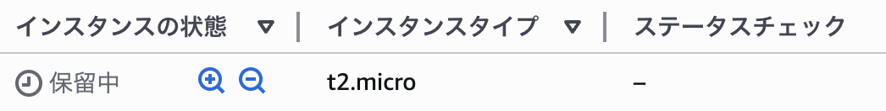
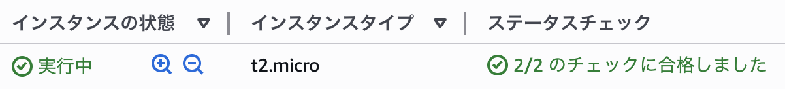
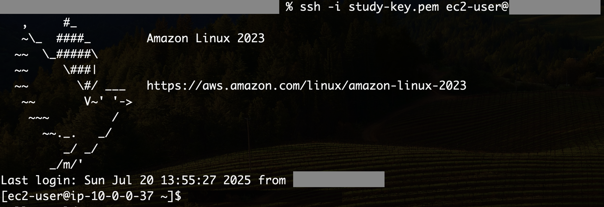
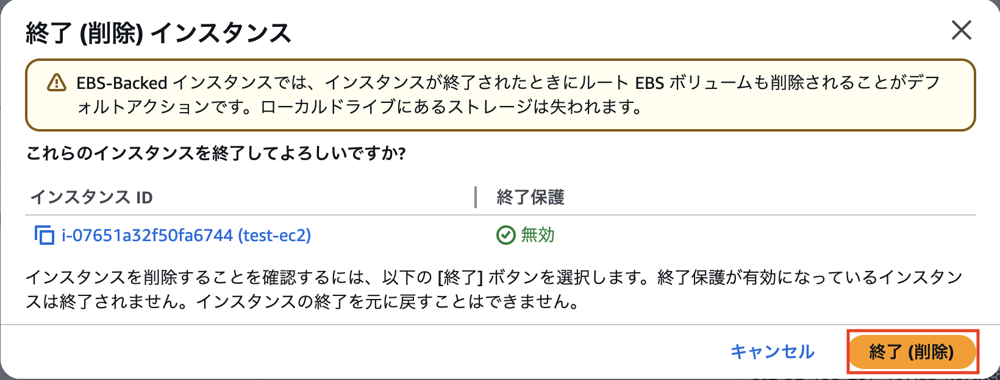
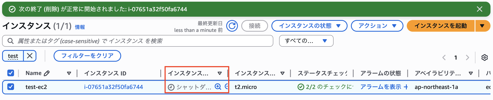

第2回：VPC設計とEC2へのSSH接続
Posted at 2025-07-20
はじめに
このセッションでは、AWSのVPC（Virtual Private Cloud）とEC2（Elastic Compute Cloud）の基本的な概念を学び、実際にVPCを構築し、EC2インスタンスを立ち上げてSSH接続するまでの流れを体験します。
このセッションは以下の構成になっています
VPCと構成要素
ハンズオン: VPC作成
EC2（仮想サーバー）の基礎
ハンズオン: EC2インスタンスの作成とSSH接続
ハンズオンの構成図は以下になります
1. VPCと構成要素
VPCはAWSのネットワーク基盤ですが、以下のようにさまざまな構成要素があり、それぞれが特定の役割を持っています。
VPC
サブネット
インターネットゲートウェイ（IGW）
ルートテーブル
NATゲートウェイ
セキュリティグループ（SG）
ネットワークACL（NACL）
Elastic IP（EIP）
Elastic Network Interface（ENI）
VPC（Virtual Private Cloud）
Amazon
VPCは、AWS内で自由に構築できる仮想的なネットワーク環境です。企業が自社専用ネットワークを構築するように、IPアドレス範囲やサブネット、ルート、セキュリティ設定などを柔軟に設計できます。
VPCのみ作成した状態ではインターネットとは接続しておらず、VPC内は完全にプライベートな状態です
VPCのネットワーク範囲はCIDR（Classless Inter-Domain
Routing）で指定します。CIDRは、IPアドレスとサブネットマスクを一緒に記述する方法です。
例：10.0.0.0/16
（ネットワークアドレスは10.0.0.0、サブネットマスクは16ビット）
VPCに使用するCIDRは以下の範囲に収まる値が推奨されています。
CIDR
IPアドレス範囲
IPアドレス数
10.0.0.0/8
10.0.0.0 ～ 10.255.255.255
約1,670万
172.16.0.0/12
172.16.0.0 ～ 172.31.255.255
約104万
192.168.0.0/16
192.168.0.0 ～ 192.168.255.255
約6.5万
サブネット（Subnet）
VPCを小さく分割したネットワーク。EC2などのリソースはサブネット内に作成します。
サブネットの図を挿入
サブネットにも「10.0.1.0/24」、「10.0.2.0/24」などCIDRを指定します。VPCのCIDR範囲に収まる値を使用します。
上記図の状態ではまだインターネットとサブネットはつながっていません。インターネットと繋がっていないサブネットはプライベートサブネットと呼ばれます。
インターネットと接続するためには必要なものがいくつかあります。
インターネットゲートウェイ（IGW）
VPC図を挿入
VPCをインターネットに接続するための出入口。VPCにアタッチします。
ルートテーブル（Route Table）
サブネットの通信経路(ルート)を定義する設定。ルートには、送信先となるIPアドレスの範囲(CIDR)と、通信が経由するリソースをターゲットとして指定します。
ルートテーブルの図を挿入
サブネットをインターネットと接続させる場合、送信先を0.0.0.0./0とし、ターゲットにインターネットゲートウェイを指定します。
ルートテーブルの図を挿入
サブネットに上記のルートテーブルがアタッチされているものは、インターネット接続ができるため、パブリックサブネット呼ばれます。
ルートテーブルにはデフォルトで送信先：10.0.0.0/16、ターゲット：localが設定されています。これは、VPCのCIDR範囲内への通信がVPC内部(local)で行われるようにするものであり、削除することはできません。
パブリックサブネット： インターネットとの通信が可能なサーバー向け（例：Webサーバー）
プライベートサブネット： 外部アクセス不可。内部処理向け（例：DB）
NAT Gateway
プライベートサブネットのインスタンスが外部と通信するために必要なリソースです。
NAT Gatewayの構成図
NAT
Gatewayを使用することで、プライベートサブネット内のインスタンスはインターネットへのアウトバウンド通信が可能になります。インバウンド通信はできません。
セキュリティグループ（SG）
EC2など、インスタンスレベルで動作するファイアウォールです。
セキュリティグループの参考画面の図
上の図ではインバウンドルールで自宅のIPアドレスからSSH接続を許可しています。
セキュリティグループはステートフルという特徴があります。インバウンド通信を許可すると、アウトバウンドの許可ルールがない場合でも、応答は自動的に許可されます。逆も同様です。ただ自動許可されるのは応答に限ります。
ネットワークACL（NACL）
サブネット単位でアクセス制御をします。
デフォルトネットワークACLの参考図
デフォルトでは全ての通信が許可されている状態です。
SGとNACLの違い
項目
セキュリティグループ
ネットワークACL
適用単位
EC2インスタンス
サブネット
通信の状態
ステートフル
ステートレス
許可・拒否
許可のみ
許可・拒否両方
アベイラビリティゾーン（AZ）
リージョン内の物理的に分離されたデータセンター群。AZ単位でサブネットを配置することで、冗長構成と高可用性を実現できます。
AZの構成図
マルチVPC
数のVPCを連携させて、それぞれのVPCが持つネットワークリソースを共有したり、相互に通信できるようにする仕組み。
3. EC2とは？
EC2（Amazon Elastic Compute
Cloud）とは、クラウド上に仮想サーバーを作成できるサービスで、OSや性能（CPU・メモリ）を自由に選んで、数分で使い始めることができます。
EC2
インスタンスは、いくつかの構成要素から成り立っており、物理パソコンの部品に例えるとイメージしやすくなります。
EC2 の構成要素
役割
物理パソコンで例えると
AMI（Amazon Machine Image）
OSや初期ソフトのテンプレート
OSインストールDVDやリカバリディスク
インスタンスタイプ
CPU・メモリなどのハードウェア性能
マザーボードやCPU、メモリ構成
EBS（Elastic Block Store）
データ保存用の仮想ディスク
ハードディスクやSSD
ENI（Elastic Network Interface）
仮想ネットワークインターフェース
LANポートや無線LANアダプタ
これらの要素を組み合わせて、必要なスペックや機能を持つ仮想サーバーを構築します。
AMI（Amazon Machine Image）
仮想サーバー（EC2インスタンス）を立ち上げる際に使う
「OSとソフトウェアが含まれたテンプレート」 です。Amazon
LinuxやWindowsなど、用途に応じたAMIを選んでサーバーを立ち上げます。
インスタンスタイプ
インスタンスタイプは、EC2 インスタンスの
CPU、メモリ、ネットワーク性能などのスペック構成を指します。用途に応じて様々なタイプ（例：t3.micro、m5.large
など）から選べ、コストと性能のバランスを柔軟に調整できます。
詳細は
公式ドキュメント（EC2インスタンスタイプ一覧）
を参照してください。
EBS（Amazon Elastic Block Store）
EBSは、EC2
インスタンスに接続して使う高可用で永続的なブロックストレージサービスです。EBS
ボリュームは「仮想ハードディスク」のように扱え、OS
からは通常のローカルディスクとして認識されます。ブロック単位でデータを管理し、自由にファイルシステムを構築できます。
OSのインストール先やアプリケーション・データベースの保存に使われ、インスタンス停止後もデータは保持されます。別のインスタンスへ付け替えることも可能です。
用途に応じて、読み書き性能（IOPS）やスループットの要件に合わせてストレージの種類や性能を柔軟に選択でき、スナップショットによるバックアップ、暗号化、容量の変更などの機能も備えています。
ENI（Elastic Network Interface）
ENIは、EC2
インスタンスにアタッチできる仮想ネットワークインターフェースで、IPアドレスやセキュリティグループなどのネットワーク設定を持ちます。インスタンス間で付け替えたり、複数の
ENI を使ってネットワークを分離・冗長化することも可能です。
Elastic IP（EIP）
Elastic
IPは、EC2インスタンスに割り当て可能な固定のグローバルIPアドレスです。
キーペア
キーペアは、EC2 インスタンスへ SSH
接続するための「公開鍵」と「秘密鍵」のセットです。インスタンス作成時に公開鍵を登録し、手元にある秘密鍵（.pem
ファイル）を使って、安全にリモート接続します。
4. EC2 ハンズオン：VPC上に仮想サーバーを立てて接続してみよう
このハンズオンの内容は以下になります。
VPC上にEC2インスタンスを作成する
自身のPC（ターミナル、コマンドライン）からSSHでEC2インスタンスに接続する
前提条件（事前に作成済み）
VPC（Virtual Private Cloud）
パブリックサブネット
インターネットゲートウェイ（IGW）
EC2用セキュリティグループ（ポート22：SSHを自分のIPに限定して許可）
1. EC2 インスタンスを作成
AWSマネジメントコンソールから「EC2」のダッシュボードを開く
「インスタンスを起動」をクリック
インスタンスの設定をする
「AMI」はAmazon Linux
2023の設定を使用する（デフォルト設定から変更なし）
「インスタンスタイプ」はt2.micro(新しい無料プランのアカウントはt3.micro)を使用する（デフォルト設定から変更なし）
キーペアは「新しいキーペアの作成」を選択
プロンプトが表示されるので、以下の内容を入力し、「キーペアを作成」を押す
作成したキーペアを選択
ネットワーク設定
ストレージはデフォルト設定を使用。「インスタンスを起動」を押します
インスタンスの起動が開始されます。「すべてのインスタンスを表示」を押します
作成したインスタンスを確認します
インスタンスの状態が「実行中」になり、ステータスチェックが「合格」となったら、次のステップに進みます。

保留中の表示
実行中及びステータスチェックの初期化表示

ステータスチェックが合格した状態
2. EC2 に SSH 接続
1. インスタンスの「パブリック IPv4 アドレス」を確認
2. .pemファイル(キーペアの秘密鍵)の権限を変更
【Mac】
📋 Copy
chmod 400 <キーペア名>.pem
【Windows】
📋 Copy
icacls <キーペア名>.pem /inheritance:r
📋 Copy
icacls <キーペア名>.pem /grant:r "$($env:USERNAME):(R)"
3. SSH
接続コマンドを実行し、EC2インスタンスに接続
以下のコマンドを実行します
📋 Copy
ssh -i <キーペア名>.pem ec2-user@<パブリックIPアドレス>
※ <パブリックIPアドレス>は、EC2のIPアドレスに置き換えてください
以下のように表示されれば、接続成功です

SSH接続後は、ユーザー名とホスト名が変わります
3. "Hello World" を表示
SSH接続した状態で、以下のコマンドを実行します
📋 Copy
echo "Hello World"
以下のように表示されれば、成功です
これで、EC2インスタンス上でコマンドを実行できるようことが確認できました
🎉 これで仮想サーバー（EC2）の立ち上げとSSH接続のハンズオンは完了です！
後片付け
セッションで作成したリソースは必ず削除をお願いします
削除手順
削除するEC2インスタンスを選択し、「インスタンスの状態」を選択し、「インスタンスを終了」を選択します
確認画面が表示されるので、終了を押します

削除中はインスタンスの状態が「シャットダウン」になります

少し待ち更新ボタンを押すと、インスタンスの状態が「終了済み」になります
おわりに
今回のセッションでは、AWSのVPCとEC2の基本的な概念と、実際にVPCを構築し、EC2インスタンスを立ち上げてSSH接続するまでの流れを体験しました。